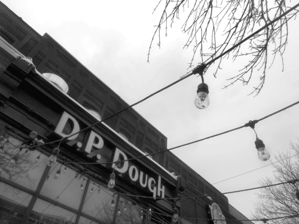
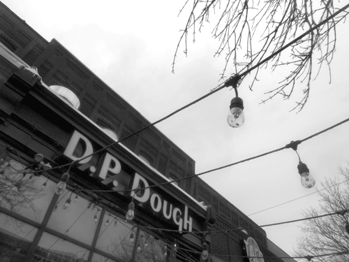
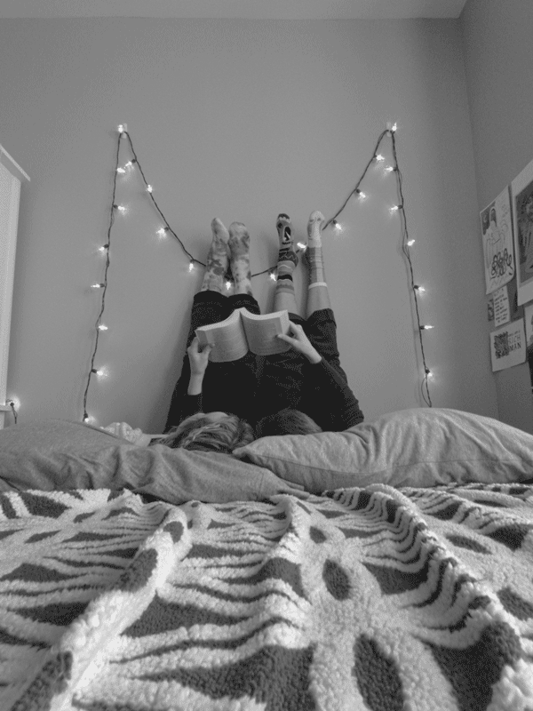

Photography
In the winter of 2022-2023 I took a photography class. These photos were all taken using a digital Canon DSLR camera. I edited these photos with Adobe Bridge and Photoshop.
Landscapes

 


Portraits: Window Light


Model: Ben Baxley
Portraits: A Married Life
